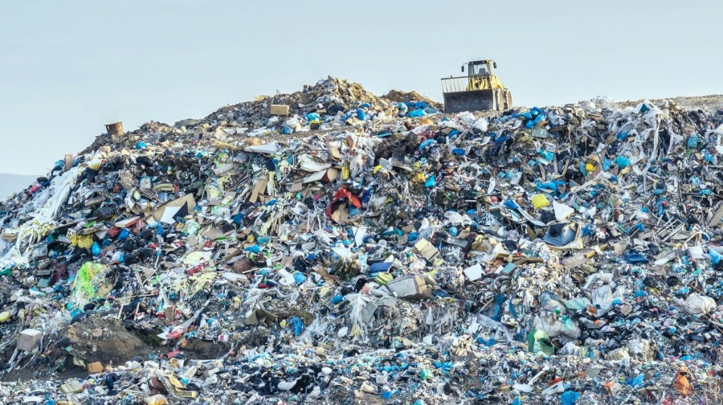
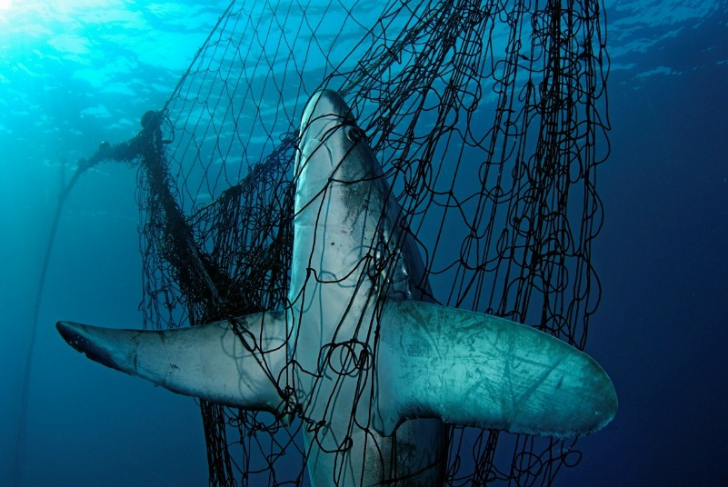

Oftentimes, issues that arise Underwater can be resolved by Clean Energy.
1. Plastic Pollution
Plastic pollution alone kills 100,000 marine animals per year. Some sources estimate that 8 million metric tonnes of plastic enters the ochean every year! Curbing these numbers is essential to maintaining a healthy underwater ecosystem.
One technology that is doing just that, while also providing renewable energy is Cold Plasma Pyrolysis. Pyrolysis is a method of heating. It decomposes organic materials in an environment with limited oxygen, using temperatures between 400 and 650 degrees Celsius. The process typically covers the energy generation of heat, electricity or fuels, but it has even greater potential with the integration of cold plasma. Cold plasma pyrolysis allows for the conversion of waste plastics into ethylene, methane and hydrogen. It's feasible to use methane and hydrogen as clean fuels, as they only produce small amounts of destructive compounds such as carbon dioxide and unburnt hydrocarbons. This has far-reaching implications for energy generation.

II. Bycatch
Global bycatch comprises 40% of the world's catch - totaling 63 billion pounds every year. As showcased in the "Life Underwater" page, marine animals such as the Hector's Dolphin are critically endangered because of it.
A Norwegian team won an international competition for selective fishing technologies by developing an air canon that launches a net into a larger fishing net to sample the size and type of fish before they are all caught. Fishers then use the sample to decide if they want to haul in this catch or not, increasing their efficiency. This reduces the conservation issue of ‘bycatch’ which is when marine species are caught and killed by accident.

III. Oil and Gas Development
Marine creatures such as Narwhals are critically affected by Oil and Gas development. More development results in more shipping vessels. The vessels ultimately lead to collisions and interfere with their inter-species communication.
Companies like Advisian and MetOcean Telematics have devised oil spill tracking buoys with integrated antennas and power. A group of these floating transceivers can be deployed by air. They send back accurate, real-time tracking of the ocean’s surface—mapping currents, oil spills, and other phenomena.
These transceivers contribute to a better understanding of the global impact of industry. The Iridium satellite system proves particularly useful in remote regions: a drifter operating in Iridium-only mode can have a lifespan up to one year, extending its applications to marine research.